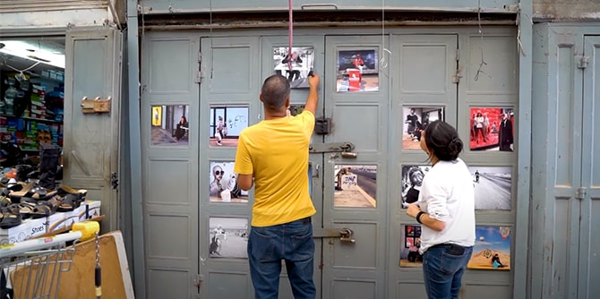

The closing event for Cohort 3 of the Mandel Program for Cultural Leadership in the Negev was a group project organized and produced by the graduating fellows under the leadership of the program’s directors,
Professor Dana Arieli and
Dr. Itzhak (Kiki) Aharonovich, as part of the “practical component” of the program.

Photo: Camilla Butchins
Titled “Yallah Tarbut!” (Let’s Go Culture!), the event had its origins in a group activity that focused on culture during the pandemic, which was held in December 2020. Following the exercise, the fellows spent several months discussing the form that their closing event would take, how many initiatives would be included in it, whether the initiatives should all have a common theme, what kind of connection there should be between the exhibits and the event as a whole, and more.
It was decided to hold the event at the Beer Sheva outdoor market, in order to promote urban renewal in one of the city’s symbolic sites. Planning was done together with representatives of the municipality who are already engaged in a broader process of urban renewal. In designing the event, the fellows contacted the director of the market and arranged a tour of the area to identify appropriate locations. Once locations had been selected, the fellows decided who would present their project in open areas and who would present in closed spaces; how to maximize the connection between the initiatives and the locations chosen; and how to express the connection between the initiatives and the marketplace as a whole. They also discussed the challenges presented by this particular urban space and planned two intensive set-up days in the market itself.
The fellows developed a shared vision of “placemaking” by developing a sustainable cultural activity with an impact on a public space. The event was based on the idea of using the marketplace as a multipurpose venue: a place that is used for commerce during the day becomes available for other purposes in the evenings, and has the potential to host cultural events that can have an impact on the city and beyond.
On July 28, 2021, around 250 people attended this exciting event, including graduates of the first two cohorts of the program and other members of the Mandel community in the Negev. At the start of the evening, the graduating fellows of Cohort 3 were congratulated by
Moshe Vigdor, director general of the Mandel Foundation–Israel;
Dr. Adi Nir-Sagi, director of the Mandel Center for Leadership in the Negev;
Shlomi Numa, executive director of the Kivunim company of culture and leisure; and
Ibrahim al-Hawashla, head of the Neve Midbar regional council.
Throughout the evening, the fellows presented their works in different locations throughout the open-air market, transforming it into a cultural hub. Their projects included art by Bedouin women, a spoken-word performance about the realities of the pandemic, photography examining social issues in the Negev, graphic design exhibits focusing on figures who symbolize Negev localness, and more. The event received media coverage in Hebrew and Arabic in several local news sites and magazines including Branza, Beer Sheva Net, Hamal, and al-Arab.
 Photo: Camilla Butchins
Photo: Camilla Butchins
The fellows of Cohort 3 – entrepreneurs, managers, and artists active in a diverse range of cultural fields throughout the Negev – completed an in-depth year-long learning journey designed to train them to be proactive leaders committed to improving life in the Negev by developing culture in the region. Upon conclusion of their studies, they joined a large and influential group of Mandel graduates throughout the Negev, who share a common understanding of leadership, a desire to drive change, and a common goal of improving the quality of life for all Negev residents. The Center’s many graduates are all pursuing that goal in different ways.
Exhibits and Performances at the “Let’s Go Culture!” Event
Adam de Lange | Community Circus Album | Video Art
Issy Mamanov Nuriel | There Once Was a Man Who Was Stuck | Stage Performance (Music by Adam de Lange)
Ariel Amit | There is None but Him/Her | Graffiti
Gilad Kaneti | Let’s Go Culture! | Management and Production of the Event
Dina Gavriely | A History of People | Spoken Word
Yael Savaya | Sand Ripples | Installation
Linor Alaluf | Margins | Photography
Marei Ktnani | Welcome | Photography
Noa Babayof | How Many Songs Can You Write About Beer Sheva? | Live Performance
Naftali Aklum | There is None but Him/Her | Graffiti
Adi Ben Boher | Let’s Go Culture! | Negev. Culture. Magazine (Instagram)
Adi Sagie | Personal Stories of the Market | Video Art
Alia Drigat | Bedouin Women Make Art | Installation
Shlomit Lazare | Bedouin Women Make Art | Installation
Shani Havdala | Let’s Go Culture! | Negev. Culture. Magazine (Instagram)
{kind=link}
{kind=link}